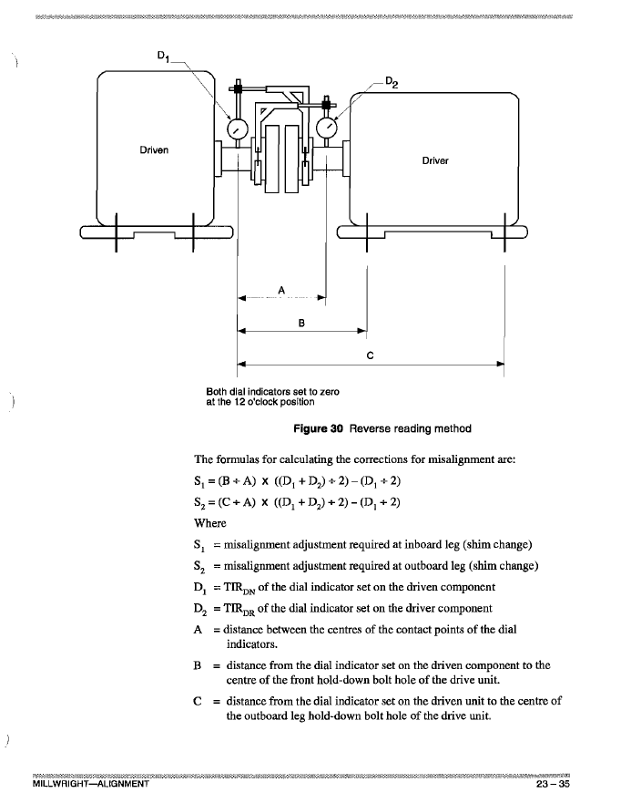

Reverse Dial Method
Dimensions
Mount both dials at 12 o'clock in the same plane and zero. Correct sag separately.
Motor-Mounted Dial Readings (D1) – reads driven
Pump-Mounted Dial Readings (D2) – reads driver
Thermal Growth Compensation
Results:
Waiting for input...
Vertical Alignment Graph
Horizontal Alignment Graph
Reference: Reverse Dial Diagram
Click image to open full size.
